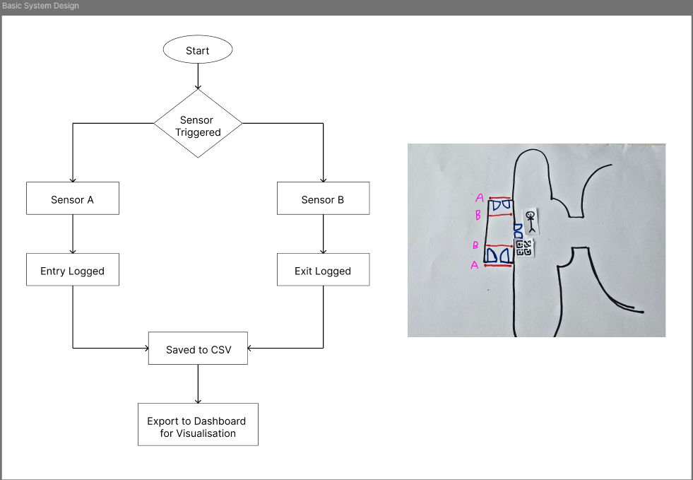
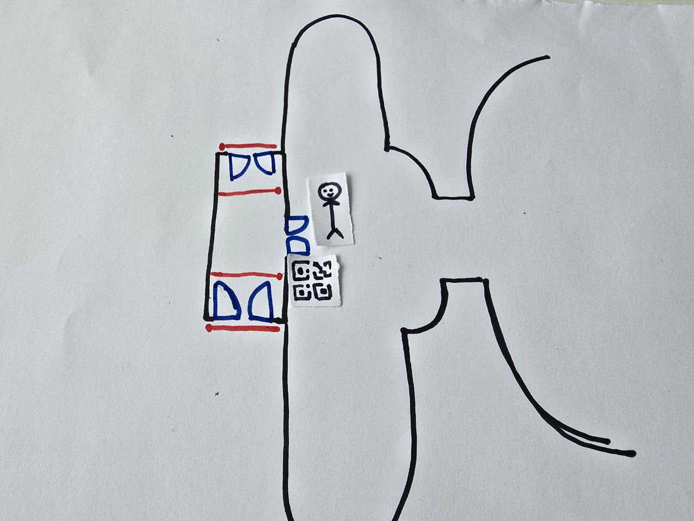
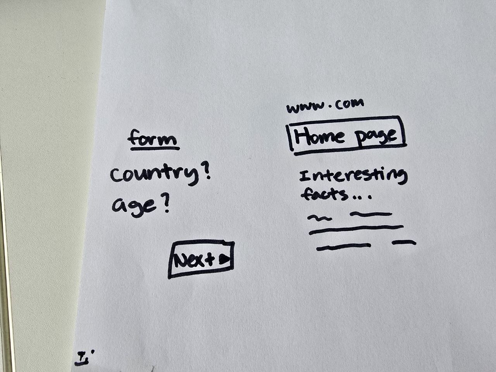

Prototype Concepts
We explored the use of dual infrared break beam sensors at the entrance to the Kibble Palace.
User flow:
Basic System Design:
- Direction-aware logic (A → B = entry, B → A = exit)
- Easily hidden in planters or fixtures
- No cameras = high privacy compliance
To track the country of origin of visitors, we experimented with a QR code linked form
QR code positioning:
Form Sketch:
- Placed in a easy to spot place
- Collecting only basic demographic data, no personal or identifiable data
- Linking to Kibble Palace website for more information
To better visualise the sensor data, we prototyped a dashboard
Dashboard Prototype:
- Designed with simplicity in mind
- Provides clear visual overview of visitor patterns and event impact
- Helps staff make informed decisions about staffing and event scheduling